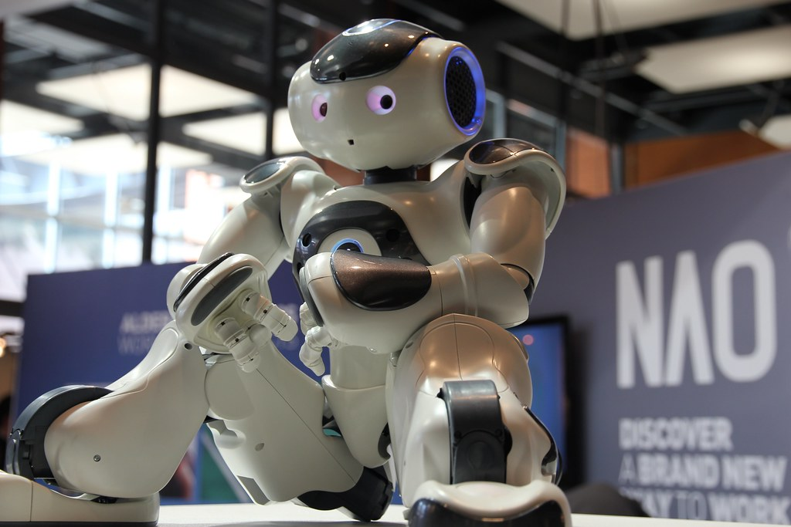

Le projet Nao
Ce projet a été mené durant 6 mois de 2022, en équipe avec deux techniciens, notre objectif était d'utiliser un robot humanoïde appelé NAO, ainsi qu'une tablette tactile pour faire des animations auprès de résidents dans un EHPAD.
Compétences liées
- Gestion de projet
- Développement Android
- Définition de cahier des charges
- Création d'interface
Mes aboutissants du projet :
- Faire danser, parler et bouger le robot
- Avoir une interface simple et intuitive
- Utiliser le Wi-Fi pour commuiquer entre la tablette et le robot
Créer une application Android utilisable par le personnel de l'EHPAD avec les requirments suivants :